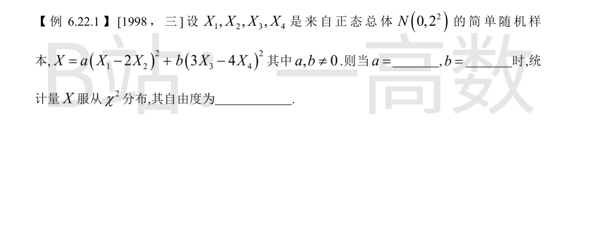
样本各分量独立且 $X_i\sim N(0,2^2)$。
1) $X_1-2X_2$ 是独立正态的线性组合：
$$X_1-2X_2\sim N\big(0,\; 2^2+(-2)^2\cdot 2^2\big)=N(0,4+16)=N(0,20),$$
故 $\dfrac{X_1-2X_2}{\sqrt{20}}\sim N(0,1)$，从而 $a(X_1-2X_2)^2=\left(\frac{X_1-2X_2}{\sqrt{20}}\right)^2\sim\chi^2(1)$ 当且仅当 $a=\dfrac{1}{20}$。
2) 同理 $$3X_3-4X_4\sim N\big(0,\; 3^2\cdot 2^2+(-4)^2\cdot 2^2\big)=N(0,36+64)=N(0,100),$$
故 $b(3X_3-4X_4)^2=\left(\frac{3X_3-4X_4}{10}\right)^2\sim\chi^2(1)$ 当且仅当 $b=\dfrac{1}{100}$。
3) 两组样本不相交，两个 $\chi^2(1)$ 变量相互独立，由 $\chi^2$ 分布可加性：
$$X=\frac{(X_1-2X_2)^2}{20}+\frac{(3X_3-4X_4)^2}{100}\sim\chi^2(1)+\chi^2(1)=\chi^2(2),$$
自由度为 $2$。
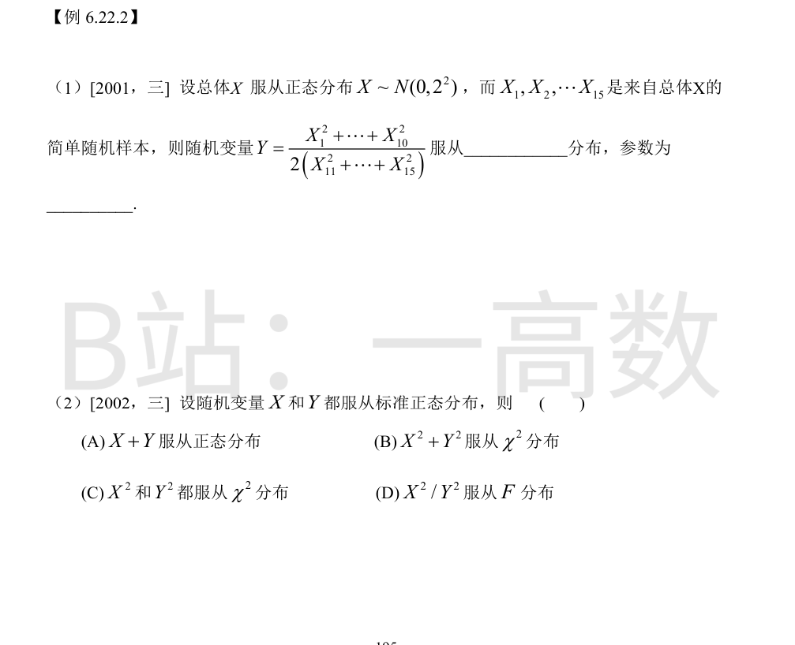
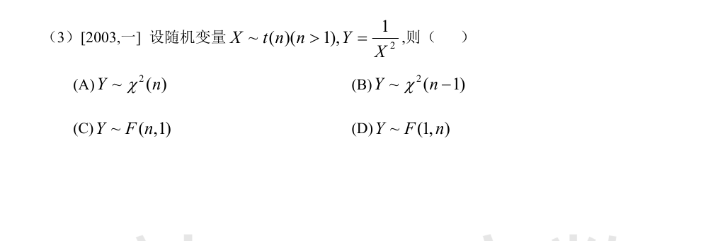
由 $X_i/2\sim N(0,1)$：
$$\frac{1}{4}\sum_{i=1}^{10}X_i^2\sim\chi^2(10),\qquad \frac{1}{4}\sum_{j=11}^{15}X_j^2\sim\chi^2(5),$$
且两段样本不相交，相互独立。
于是
$$Y=\frac{\sum_{i=1}^{10}X_i^2}{2\sum_{j=11}^{15}X_j^2}
=\frac{4\,\chi^2(10)}{2\cdot 4\,\chi^2(5)}
=\frac{\chi^2(10)}{2\,\chi^2(5)}
=\frac{\chi^2(10)/10}{\chi^2(5)/5}\sim F(10,5).$$
即 $Y$ 服从第一自由度 $10$、第二自由度 $5$ 的 $F$ 分布。
题中只给边缘分布 $X\sim N(0,1)$、$Y\sim N(0,1)$，未设 $X,Y$ 独立，故凡涉及联合性质的选项都不能保证：
- (A) 不一定：仅当独立时 $X+Y$ 才必为正态，联合非正态时 $X+Y$ 可以不是正态；
- (B) 不一定：$X^2\sim\chi^2(1)$、$Y^2\sim\chi^2(1)$，但两者未必独立，$X^2+Y^2$ 未必是 $\chi^2(2)$；
- (D) 不一定：$X^2/Y^2\sim F(1,1)$ 需要 $X^2$ 与 $Y^2$ 独立；
- (C) 正确：单个标准正态变量的平方服从 $\chi^2(1)$ 分布，这只依赖各自边缘分布，无需独立性，故 $X^2$ 和 $Y^2$ 都服从 $\chi^2$ 分布。
按 $t$ 分布定义，可设 $X=\dfrac{Z}{\sqrt{W/n}}$，其中 $Z\sim N(0,1)$，$W\sim\chi^2(n)$，二者独立。
则
$$X^2=\frac{Z^2/1}{W/n}=\frac{\chi^2(1)/1}{\chi^2(n)/n}\sim F(1,n).$$
由 $F$ 分布性质 $\dfrac{1}{F(1,n)}\sim F(n,1)$，得
$$Y=\frac{1}{X^2}\sim F(n,1).$$
故选 (C)。
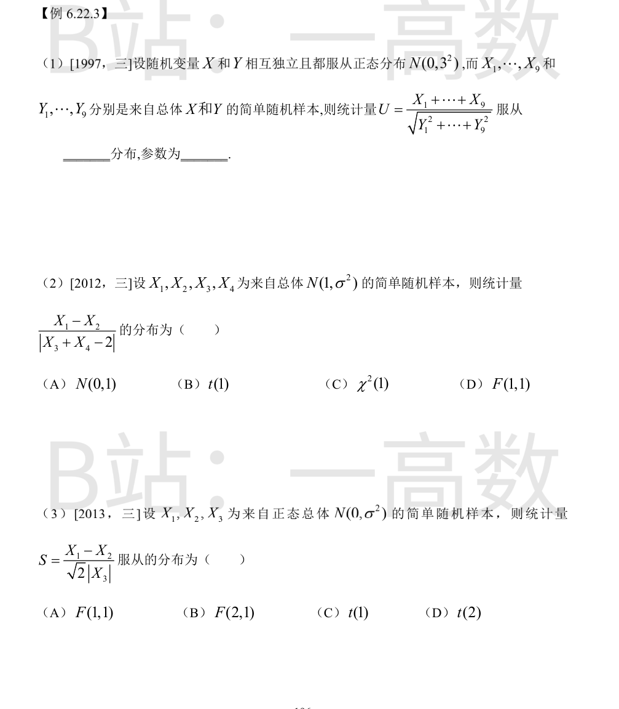
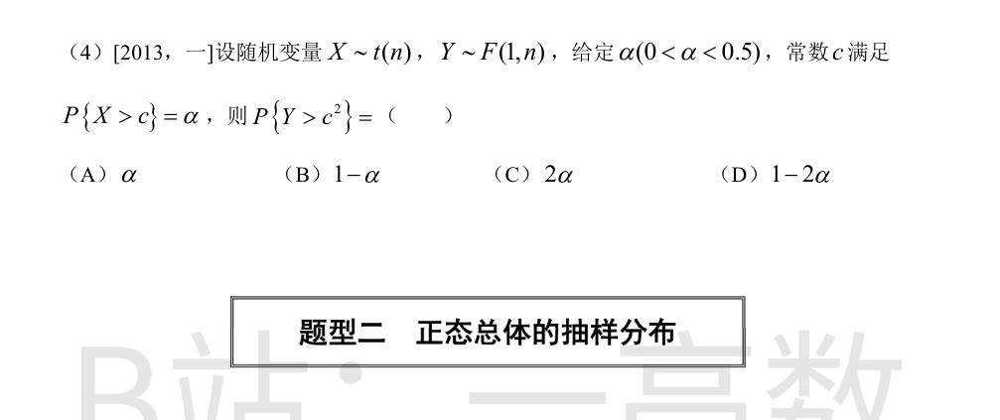
1) $X_i$ 独立同 $N(0,9)$，故
$$\sum_{i=1}^{9}X_i\sim N(0,\,9\times 9)=N(0,81),\qquad \frac{1}{9}\sum_{i=1}^{9}X_i\sim N(0,1).$$
2) $Y_j/3\sim N(0,1)$，故
$$\frac{1}{9}\sum_{j=1}^{9}Y_j^2=\sum_{j=1}^{9}\left(\frac{Y_j}{3}\right)^2\sim\chi^2(9).$$
3) 两样本独立，分子与分母独立。于是
$$U=\frac{\sum X_i/9}{\sqrt{\sum Y_j^2/81}}
=\frac{\left(\sum X_i/9\right)}{\sqrt{\left(\sum Y_j^2/9\right)/9}}
\sim\frac{N(0,1)}{\sqrt{\chi^2(9)/9}}\sim t(9).$$
即 $U$ 服从自由度为 $9$ 的 $t$ 分布。
$X_1-X_2\sim N(0,2\sigma^2)$，$X_3+X_4-2\sim N(0,2\sigma^2)$，二者只涉及不相交的样本，相互独立。
标准化：
$$A=\frac{X_1-X_2}{\sqrt{2}\,\sigma}\sim N(0,1),\qquad B=\frac{X_3+X_4-2}{\sqrt{2}\,\sigma}\sim N(0,1),\quad B^2\sim\chi^2(1).$$
于是
$$\frac{X_1-X_2}{\lvert X_3+X_4-2\rvert}
=\frac{A}{\lvert B\rvert}
=\frac{A}{\sqrt{B^2/1}}
\sim\frac{N(0,1)}{\sqrt{\chi^2(1)/1}}\sim t(1).$$
故选 (B)。
$X_1-X_2\sim N(0,2\sigma^2)$，$X_3\sim N(0,\sigma^2)$，二者独立。标准化：
$$A=\frac{X_1-X_2}{\sqrt{2}\,\sigma}\sim N(0,1),\qquad \left(\frac{X_3}{\sigma}\right)^2\sim\chi^2(1).$$
于是
$$S=\frac{X_1-X_2}{\sqrt{2}\,\lvert X_3\rvert}
=\frac{A}{\sqrt{(X_3/\sigma)^2/1}}
\sim\frac{N(0,1)}{\sqrt{\chi^2(1)/1}}\sim t(1).$$
故选 (C)。
设 $X=\dfrac{Z}{\sqrt{W/n}}$（$Z\sim N(0,1)$，$W\sim\chi^2(n)$，独立），则
$$X^2=\frac{Z^2/1}{W/n}\sim F(1,n),$$
即 $Y$ 与 $X^2$ 同分布。
由 $t(n)$ 分布密度关于原点对称：
$$P\{Y>c^2\}=P\{X^2>c^2\}=P\{\lvert X\rvert>c\}=P\{X>c\}+P\{X<-c\}=\alpha+\alpha=2\alpha.$$
又 $0<\alpha<0.5$ 保证 $2\alpha<1$，是合法概率。故选 (C)。
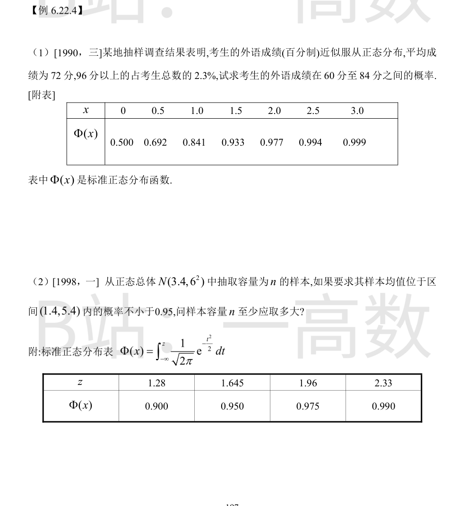
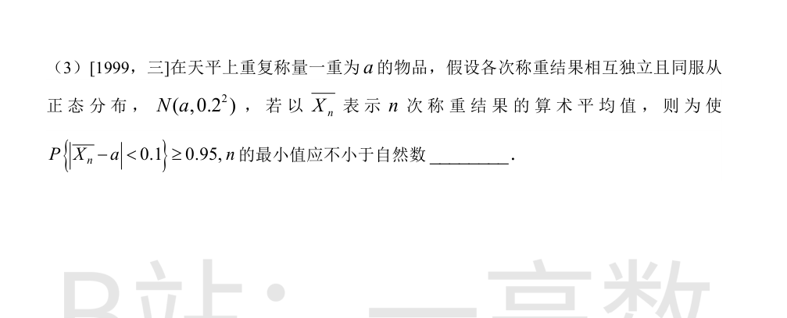
设成绩 $X\sim N(72,\sigma^2)$。
1) 由 $P\{X\ge 96\}=0.023$：
$$1-\Phi\left(\frac{96-72}{\sigma}\right)=0.023\ \Longrightarrow\ \Phi\left(\frac{24}{\sigma}\right)=0.977,$$
查表 $\Phi(2.0)=0.977$，故 $\dfrac{24}{\sigma}=2.0$，得 $\sigma=12$。
2) 于是
$$P\{60\le X\le 84\}=\Phi\left(\frac{84-72}{12}\right)-\Phi\left(\frac{60-72}{12}\right)=\Phi(1)-\Phi(-1)=2\Phi(1)-1,$$
查表 $\Phi(1)=0.841$，故所求概率 $=2\times 0.841-1=0.682$。
$$\bar{X}\sim N\left(3.4,\ \frac{36}{n}\right).$$
$$P\{1.4<\bar X<5.4\}=P\left\{\lvert \bar X-3.4\rvert<2\right\}
=2\Phi\left(\frac{2}{6/\sqrt n}\right)-1=2\Phi\left(\frac{\sqrt n}{3}\right)-1\ge 0.95.$$
故 $\Phi\left(\dfrac{\sqrt n}{3}\right)\ge 0.975$，查表 $\Phi(1.96)=0.975$，得
$$\frac{\sqrt n}{3}\ge 1.96\ \Longrightarrow\ \sqrt n\ge 5.88\ \Longrightarrow\ n\ge 5.88^2=34.5744.$$
故 $n$ 至少取 $35$。
$$\bar X_n\sim N\left(a,\ \frac{0.2^2}{n}\right).$$
$$P\{\lvert \bar X_n-a\rvert<0.1\}=2\Phi\left(\frac{0.1}{0.2/\sqrt n}\right)-1=2\Phi\left(\frac{\sqrt n}{2}\right)-1\ge 0.95,$$
故 $\Phi\left(\dfrac{\sqrt n}{2}\right)\ge 0.975=\Phi(1.96)$，得
$$\frac{\sqrt n}{2}\ge 1.96\ \Longrightarrow\ \sqrt n\ge 3.92\ \Longrightarrow\ n\ge 3.92^2=15.3664.$$
故 $n$ 的最小值应不小于自然数 $16$。
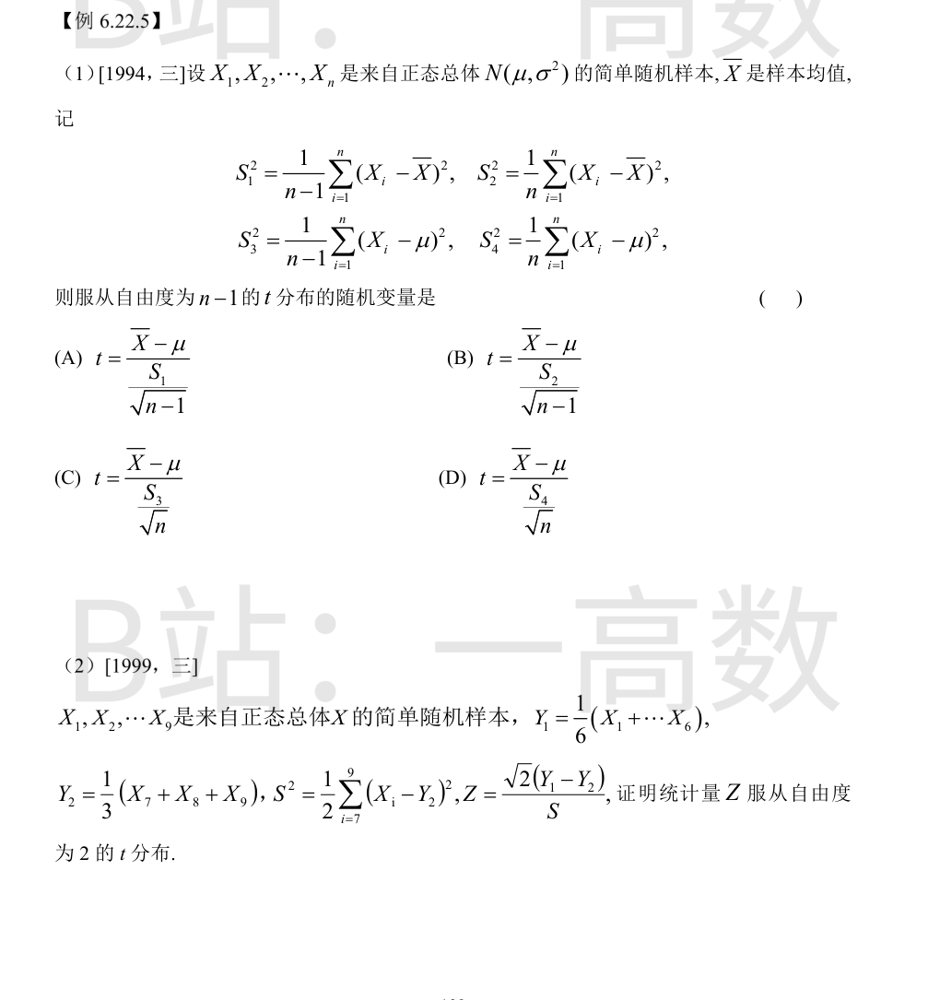
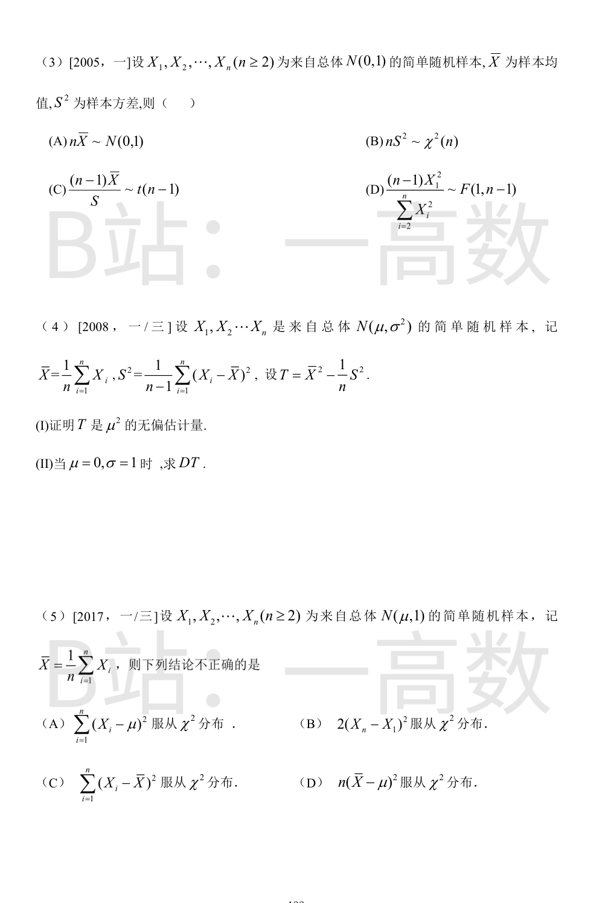
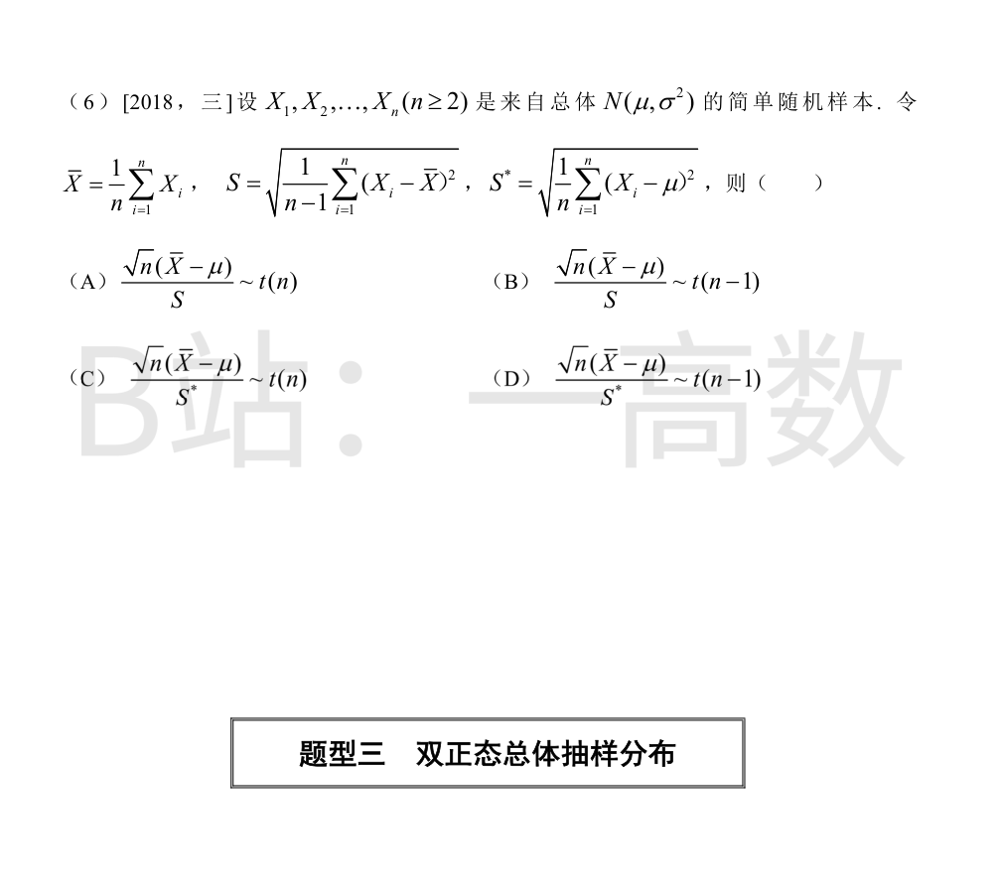
标准分解：$\dfrac{\sqrt n(\bar X-\mu)}{\sigma}\sim N(0,1)$，且
$$\frac{\sum_{i=1}^n(X_i-\bar X)^2}{\sigma^2}=\frac{nS_2^2}{\sigma^2}\sim\chi^2(n-1),$$
二者相互独立（正态总体样本均值与样本（中心化）平方和独立）。
按 $t$ 分布构造：
$$\frac{\sqrt n(\bar X-\mu)/\sigma}{\sqrt{\dfrac{nS_2^2/\sigma^2}{n-1}}}
=\frac{\sqrt n(\bar X-\mu)/\sigma}{\dfrac{\sqrt n S_2}{\sigma\sqrt{n-1}}}
=\frac{\sqrt{n-1}\,(\bar X-\mu)}{S_2}
=\frac{\bar X-\mu}{S_2/\sqrt{n-1}}\sim t(n-1).$$
逐项检查：
- (A) $\dfrac{\bar X-\mu}{S_1/\sqrt{n-1}}=\sqrt{n-1}\dfrac{\bar X-\mu}{S_1}=\sqrt{\tfrac{n-1}{n}}\cdot\dfrac{\sqrt n(\bar X-\mu)}{S_1}$，是 $t(n-1)$ 的常数倍（$S_1$ 应配 $\sqrt n$），不是 $t$ 分布；
- (B) 正确（如上）；
- (C)(D) 中 $\dfrac{\sum(X_i-\mu)^2}{\sigma^2}\sim\chi^2(n)$，自由度是 $n$ 且与 $\bar X$ 不独立，构造不出 $t(n-1)$。
故选 (B)。
记总体 $X\sim N(\mu,\sigma^2)$。
1) 分子的分布：
$$Y_1=\frac{1}{6}\sum_{i=1}^{6}X_i\sim N\left(\mu,\ \frac{\sigma^2}{6}\right),\qquad
Y_2=\frac{1}{3}\sum_{i=7}^{9}X_i\sim N\left(\mu,\ \frac{\sigma^2}{3}\right),$$
两组样本不相交，故 $Y_1,Y_2$ 独立，于是
$$Y_1-Y_2\sim N\left(0,\ \frac{\sigma^2}{6}+\frac{\sigma^2}{3}\right)=N\left(0,\ \frac{\sigma^2}{2}\right),
\qquad \frac{Y_1-Y_2}{\sigma/\sqrt2}\sim N(0,1).$$
2) 分母的分布：对样本 $X_7,X_8,X_9$（容量 3），
$$\frac{(3-1)S^2}{\sigma^2}=\frac{1}{\sigma^2}\sum_{i=7}^{9}(X_i-Y_2)^2\sim\chi^2(2),$$
且由样本均值与残差平方和的独立性（或 $Y_2$ 只依赖 $X_7,X_8,X_9$、$Y_1$ 只依赖前 6 个），该 $\chi^2(2)$ 与 $Y_1$（从而与 $Y_1-Y_2$）独立。
3) 构造 $t$：
$$Z=\frac{\sqrt2\,(Y_1-Y_2)}{S}
=\frac{\dfrac{Y_1-Y_2}{\sigma/\sqrt2}}{\sqrt{\dfrac{S^2}{\sigma^2}}}
=\frac{N(0,1)}{\sqrt{\dfrac{\chi^2(2)}{2}}},$$
分子分母独立，由 $t$ 分布定义得 $Z\sim t(2)$，自由度为 2。证毕。
- (A) 错：$\bar X\sim N(0,1/n)$，$n\bar X\sim N(0,n)$，不是 $N(0,1)$；
- (B) 错：正确关系是 $(n-1)S^2\sim\chi^2(n-1)$，而非 $nS^2\sim\chi^2(n)$；
- (C) 错：正确关系是 $\dfrac{\sqrt n\bar X}{S}\sim t(n-1)$；$(n-1)$ 倍的 $\bar X$ 配 $S$ 不满足该结构；
- (D) 对：$X_1^2\sim\chi^2(1)$，$\displaystyle\sum_{i=2}^{n}X_i^2\sim\chi^2(n-1)$，且二者独立，故
$$\frac{(n-1)X_1^2}{\sum_{i=2}^{n}X_i^2}=\frac{X_1^2/1}{\left(\sum_{i=2}^{n}X_i^2\right)/(n-1)}\sim F(1,\,n-1).$$
故选 (D)。
**(I)** $E(\bar X)=\mu$，$D(\bar X)=\sigma^2/n$，$E(S^2)=\sigma^2$，且 $\bar X$ 与 $S^2$ 相互独立，但计算期望只需线性性：
$$E(T)=E(\bar X^2)-\frac{1}{n}E(S^2)=\left[D(\bar X)+(E\bar X)^2\right]-\frac{\sigma^2}{n}
=\left(\frac{\sigma^2}{n}+\mu^2\right)-\frac{\sigma^2}{n}=\mu^2.$$
故 $T$ 是 $\mu^2$ 的无偏估计。
**(II)** 当 $\mu=0,\sigma=1$：
1) $\bar X\sim N(0,1/n)$。对 $Z\sim N(0,\tau^2)$ 有 $E(Z^4)=3\tau^4$，故
$$E(\bar X^2)=\frac1n,\qquad E(\bar X^4)=\frac{3}{n^2},\qquad D(\bar X^2)=\frac{3}{n^2}-\frac{1}{n^2}=\frac{2}{n^2}.$$
2) $(n-1)S^2\sim\chi^2(n-1)$，$D\big[(n-1)S^2\big]=2(n-1)$，故 $D(S^2)=\dfrac{2}{n-1}$，从而
$$D\left(\frac{S^2}{n}\right)=\frac{2}{n^2(n-1)}.$$
3) $\bar X$ 与 $S^2$ 独立 $\Rightarrow\ \bar X^2$ 与 $S^2/n$ 独立，故
$$D(T)=D(\bar X^2)+D\left(\frac{S^2}{n}\right)=\frac{2}{n^2}+\frac{2}{n^2(n-1)}=\frac{2(n-1)+2}{n^2(n-1)}=\frac{2n}{n^2(n-1)}=\frac{2}{n(n-1)}.$$
注：严格说 $T=\bar X^2-\frac1nS^2$ 中两项不独立不影响方差公式，$D(aX+bY)=a^2DX+b^2DY$ 只需不相关；由 $\bar X$ 与 $S^2$ 独立知 $\bar X^2$ 与 $S^2$ 独立，协方差为 0。
- (A) 正确：$X_i-\mu\sim N(0,1)$，$\displaystyle\sum_{i=1}^{n}(X_i-\mu)^2\sim\chi^2(n)$；
- (B) 不正确：$X_n-X_1\sim N(0,2)$，故 $\dfrac{(X_n-X_1)^2}{2}\sim\chi^2(1)$，而
$$2(X_n-X_1)^2=4\cdot\frac{(X_n-X_1)^2}{2}\sim 4\,\chi^2(1),$$
不是 $\chi^2$ 分布（系数 2 放错了位置，应为 $\dfrac{(X_n-X_1)^2}{2}$）；
- (C) 正确：$\displaystyle\sum_{i=1}^{n}(X_i-\bar X)^2\sim\chi^2(n-1)$；
- (D) 正确：$\sqrt n(\bar X-\mu)\sim N(0,1)$，$n(\bar X-\mu)^2\sim\chi^2(1)$。
故不正确的结论是 (B)。
经典抽样分布：$\dfrac{\sqrt n(\bar X-\mu)}{\sigma}\sim N(0,1)$，$\dfrac{(n-1)S^2}{\sigma^2}\sim\chi^2(n-1)$，且二者独立，故
$$\frac{\sqrt n(\bar X-\mu)}{S}=\frac{\sqrt n(\bar X-\mu)/\sigma}{\sqrt{\dfrac{(n-1)S^2/\sigma^2}{n-1}}}\sim t(n-1).$$
即 (B) 正确，(A) 的自由度 $t(n)$ 错误。
(C)(D)：$\dfrac{\sum_{i=1}^{n}(X_i-\mu)^2}{\sigma^2}\sim\chi^2(n)$ 固然成立，但它含 $\mu$ 且与 $\bar X$ 不独立（$\sum(X_i-\mu)^2=\sum(X_i-\bar X)^2+n(\bar X-\mu)^2$），除以 $n$ 后再开方凑不出「独立的 $\chi^2(n-1)/(n-1)$」结构，故 $\dfrac{\sqrt n(\bar X-\mu)}{S^*}$ 不服从 $t$ 分布，(C)(D) 均错。
故选 (B)。
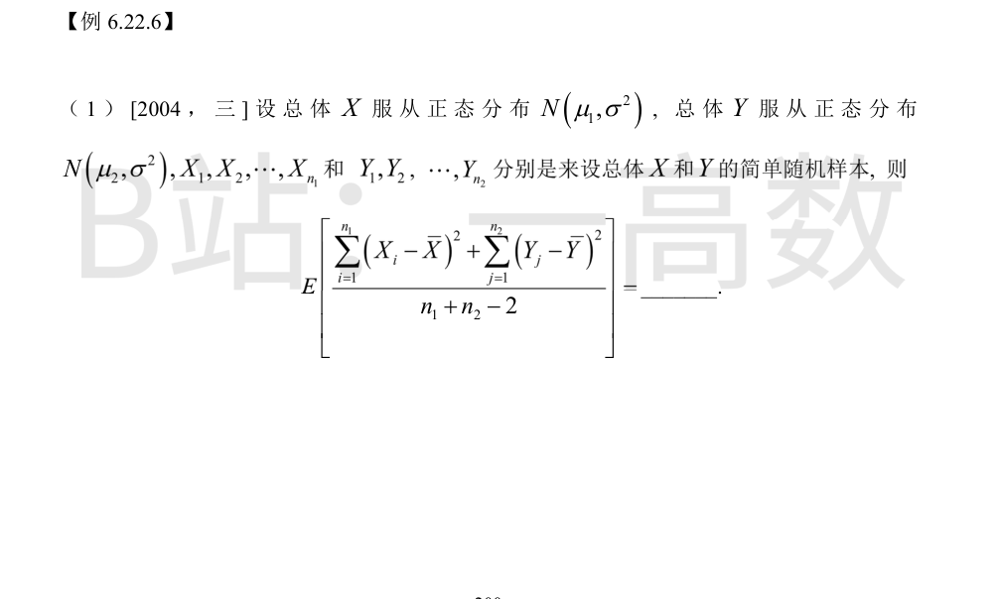
对正态总体有 $\dfrac{(n_1-1)S_X^2}{\sigma^2}=\dfrac{\sum_{i=1}^{n_1}(X_i-\bar X)^2}{\sigma^2}\sim\chi^2(n_1-1)$，故
$$E\left[\sum_{i=1}^{n_1}(X_i-\bar X)^2\right]=(n_1-1)\sigma^2.$$
同理（两总体方差均为 $\sigma^2$）
$$E\left[\sum_{j=1}^{n_2}(Y_j-\bar Y)^2\right]=(n_2-1)\sigma^2.$$
由期望线性性：
$$E\left[\frac{\sum_{i=1}^{n_1}(X_i-\bar X)^2+\sum_{j=1}^{n_2}(Y_j-\bar Y)^2}{n_1+n_2-2}\right]
=\frac{(n_1-1)\sigma^2+(n_2-1)\sigma^2}{n_1+n_2-2}=\sigma^2.$$
即合并样本方差（两样本 $t$ 统计量中的公共方差估计 $S_\omega^2$）是 $\sigma^2$ 的无偏估计。